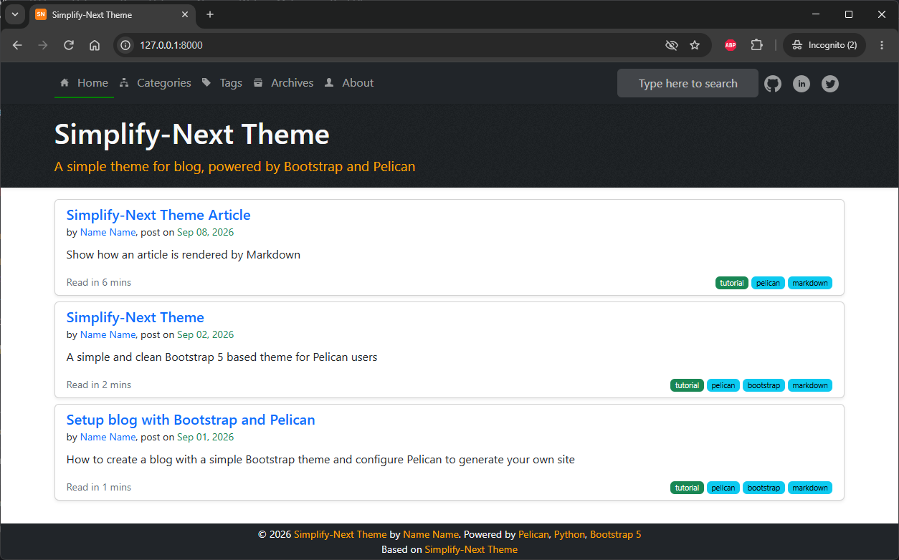

A simple, clean, contentful Bootstrap 5 theme for Pelican blogger.
You can use this theme to host programming articles, journals, or galeries.
Live Demo
Visit the live blog of the theme creator’s blog: https://Name Name.github.io/simplify-theme to see theme in action, which is also has some articles about theme’s documents.
Source code simplify-theme
Features
- Responsive layout for mobile and desktop (Bootstrap)
- Quick Search (Stork Search and/or Google Search)
- OpenGraph (Facebook) and Twitter support
- SEO with contentful metadata, ready for search indexing
- Table of Content sidebar with highlight
- Back to Top floating button in long article
- Related posts, next/previous articles
- Collapsible lists in tags and categories
- Social Sharing (static share buttons)
- Comments on articles (Diqus)
- Rich Snippets (metadata, json-ld, sitemap, robots.txt)
Install
Download the theme from simplify-theme or from pelican-themes.
You may need to check the included example pelicanconf.py and publishconf.py for more information.
Integrations
- Disqus: add comments support
- Google AdSense: show ads
- Google Analytics: track your site
- Google Tag Manager: new version to track your site
- Matomo: formerly Piwik Analytics: another site tracking service
Plugins Support
- sitemap: generate sitemap document, see https://www.sitemaps.org
- post_stats: generate post statistics: words, estimated read time, tag cloud
- related_posts: find relate posts to the reading article
- neighbors: find next/preivious article
- share_post: share article via static buttons (Twitter, LinkedIn)
Markdown extensions
By default Pelican enables below extensions to process your markdown files:
markdown.extensions.extraincludesabbr,attr_list,def_list,fenced_code,footnotes, andtablesmarkdown.extensions.codehilitemarkdown.extensions.meta
Simplify-Next Theme has some style configs to work with extra extenstions to render your page better:
markdown.extensions.sane_listsmarkdown.extensions.tocmarkdown.extensions.nl2brmarkdown_checklist.extension
Customized styles
The theme also bring to you a clean, simple, but contenful layout.
This Simplify-Next Theme Article will guide you how to write content in markdown and how it will be rendered on your page.
Preview

How to contribute
Developing Simplify-Next Theme is my effort in some weekends. You are invited to help develop it further.
Feel free to fork the [repository][], and submit pull requests.
If you find any issues, or have a suggestion, then please open an [issue][].
License
Simplify-Next Theme is released under the Creative Commons Attribution 4.0 International license.
All contributors will be listed in Authors page. It maybe imcomplete but it is to honor in all they did.
I would like you to have some words to refer to authors work in your page’s footer. Thank you in advanced!
Read more: